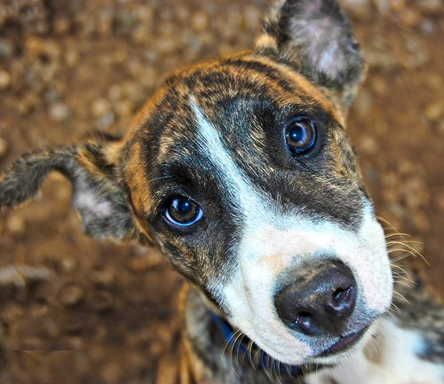
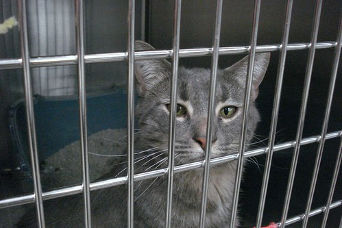
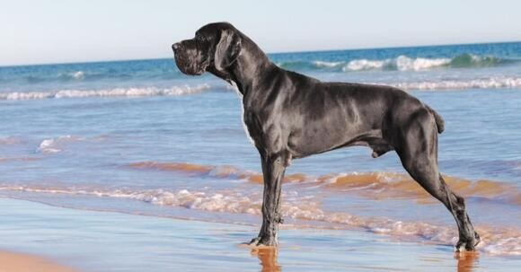
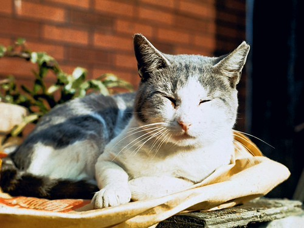
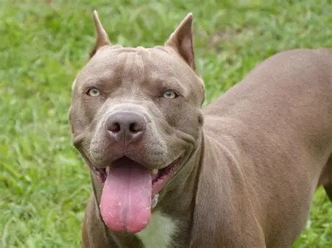
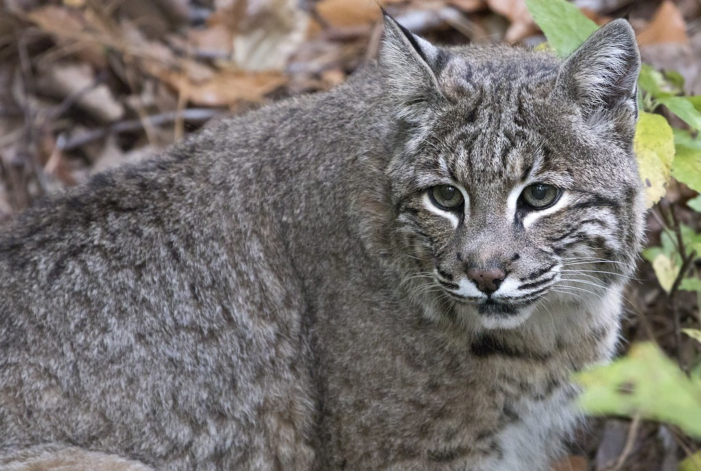

AvailableFind your match
Animals looking for their forever homes.
Every animal below has been vaccinated, sterilised and assessed by our team. Contact us to begin the adoption process.

Available
Available
Available
Available
AvailableWhat happens next?
Start with a simple enquiry.
Tell us which animal you are interested in and our team will contact you within 48 hours to discuss the next steps.
Begin an enquiry